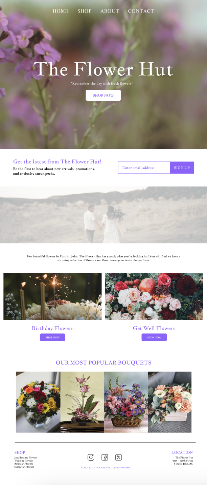
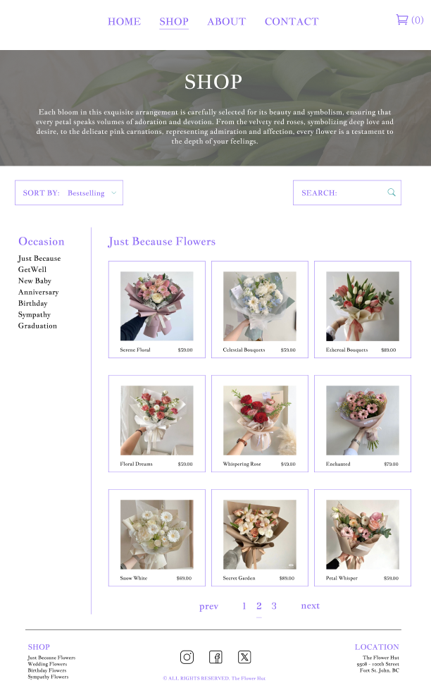
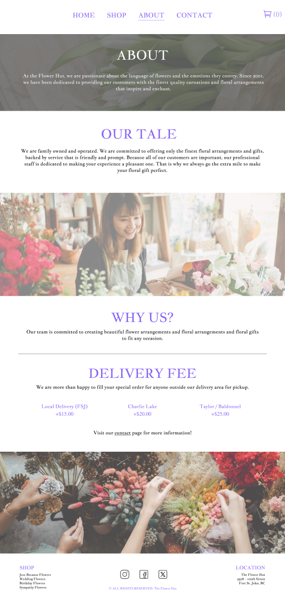
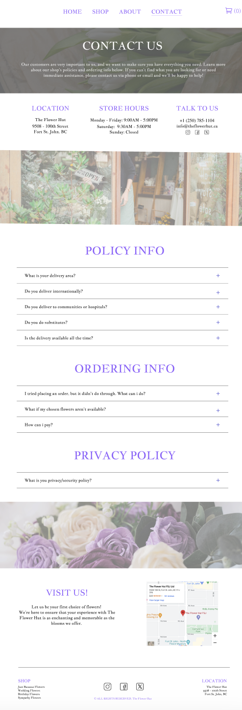
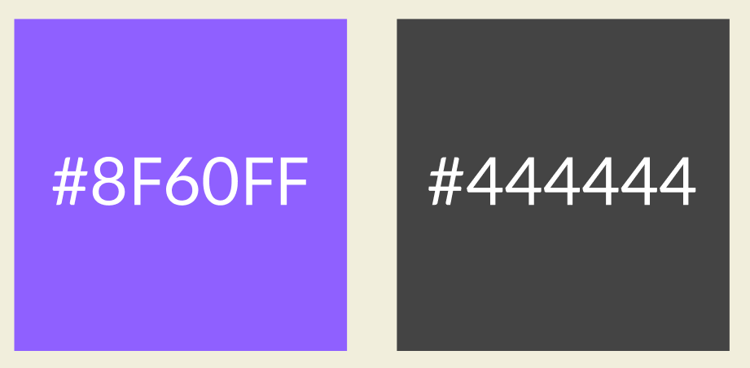

The Flower Hut is a family-owned and operated flower shop proudly serving the Fort St. John area. The goal of this project is to modernize the website's design, improve user experience, and enhance overall functionality, ensuring it meets the needs of its users while providing an aesthetically pleasing and intuitive experience.
Old Design


Old Design Issues
Outdated Aesthetics
- The overall design of the website feels outdated, with an old-fashioned color scheme and layout that do not reflect modern web design trends.
Visual Clutter
- The homepage of Flower Hut Florist's website is visually cluttered with an overload of images, text, and promotional banners. This overwhelming amount of information makes it difficult for visitors to focus on specific products or navigate the site effectively.
Navigation
- The website's navigation menu is overly complex and crowded with too many subcategories and options. This complexity can confuse users and make it hard for them to find what they're looking for. Streamlining the navigation menu by consolidating similar categories and reducing the number of options can make it more intuitive and user-friendly.
Complicated UX
- The website's navigation menu is overly complex and crowded with too many subcategories and options. This complexity can confuse users and make it hard for them to find what they're looking for. Streamlining the navigation menu by consolidating similar categories and reducing the number of options can make it more intuitive and user-friendly.
New Design




Design Features
Modern Design
- Updating the visual design with contemporary aesthetics, including a fresh color palette, modern fonts, and a clean layout, can significantly enhance the site's appeal.
- Modernizing the design can also help in conveying a professional and trustworthy brand image, which is important for attracting and retaining customers.
- Simplifying the layout, using more whitespace, and organizing content into clear sections can significantly enhance user experience by making the site more visually appealing and easier to navigate.
Intuitive Navigation
- Streamlining the navigation menu by consolidating similar categories and reducing the number of options can make it more intuitive and user-friendly. A well-structured menu helps users quickly locate products and information, improving their overall experience on the site.
Responsive Design
- Mobile optimization is essential as a significant portion of users access websites through their mobile devices, and a responsive design ensures a smooth and enjoyable browsing experience.